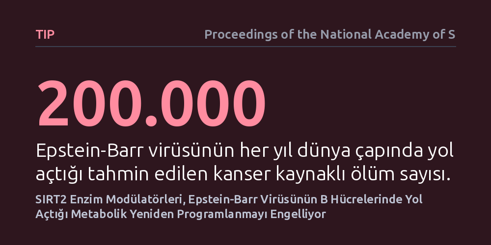

TIP · Proceedings of the National Academy of Sciences · 2026-09-08
Araştırmacılar, her yıl yüz binlerce kanser ölümüne yol açan Epstein-Barr virüsünün bağışıklık hücrelerini nasıl ele geçirdiğini inceledi. Çalışmada, SIRT2 enzimini hedefleyen moleküllerin B hücrelerindeki metabolik yeniden programlanmayı durdurarak virüs kaynaklı aktivasyonu engellediği gösterildi.
Virüs kaynaklı kanserlerde tüm bağışıklık sistemini toptan baskılamak yerine, yalnızca virüsün istismar ettiği hücresel metabolizma mekanizmasını hedef almanın mümkün olduğunu gösteriyor.

Epstein-Barr virüsü (EBV), dünya nüfusunun büyük kısmında bulunan ve bağışıklık sisteminin B hücrelerini hedef alan yaygın bir virüstür. Çoğu bireyde yaşam boyu sessiz kalsa da virüs, her yıl yaklaşık 200.000 kişinin hayatına mal olan lenfoma ve nazofarenks kanseri gibi çeşitli kötü huylu hastalıklara zemin hazırlar. Virüs bir B hücresini enfekte ettiğinde, hücrenin normal büyüme ve bölünme mekanizmalarını kendi lehine çevirir.
Günümüzdeki klinik yaklaşımlar genellikle tüm bağışıklık sistemini baskılayan geniş etkili tedavilere dayanır. Bu durum hastaları ikincil enfeksiyonlara açık hale getirirken tedavinin başarısı da vakadan vakaya ciddi farklılıklar gösterir. Bilim insanları, bağışıklık sistemini toptan zayıflatmadan, yalnızca virüsün enfekte ettiği hücrelerdeki patolojik dönüşümü durdurabilecek hassas biyokimyasal hedefler aramaktadır.
B hücreleri virüsle karşılaştığında ya da dışarıdan gelen uyarılara yanıt verdiğinde hızla büyümek ve antikor üretmek için metabolizmasını kökten değiştirir; buna metabolik yeniden programlanma denir. Hücre, enerji tüketimini ve besin işleme biçimini olağanüstü hızlandırarak kontrolsüz çoğalmaya uygun hale gelir. Araştırma ekibi, bu metabolik sıçramayı kontrol eden kilit noktalardan biri olarak hücre içindeki protein düzenleyici SIRT2 deasilaz enzimine odaklandı.
Çalışmada, EBV ile enfekte edilmiş ve mitojenlerle uyarılmış insan B hücreleri kontrollü laboratuvar ortamında incelendi. Araştırmacılar, SIRT2 enziminin etkinliğini seçici biçimde değiştiren modülatör moleküller uygulayarak hücrenin enerji metabolizmasındaki ve sinyal iletimindeki değişimleri ayrıntılı olarak ölçümledi.
Deney sonuçları, SIRT2 modülatörlerinin EBV kaynaklı B hücresi metabolik yeniden programlanmasını etkin biçimde engellediğini ortaya koydu. Normalde virüs hücreyi ele geçirdiğinde çoğalmayı sürdürmek için gerekli metabolik yolları tetikler; ancak SIRT2 engellendiğinde B hücreleri bu enerji dönüşümünü gerçekleştiremedi.
Aynı zamanda bu moleküller, mitojenik aktivasyonun yol açtığı kontrolsüz uyarılmayı da dizginledi. Böylece virüsün enfekte ettiği bağışıklık hücresi, kontrolsüz bir tümör hücresi gibi davranmak yerine büyüme sinyallerine karşı yanıtsız kalarak çoğalmasını durdurdu.
Bu bulgu, EBV kaynaklı lenfomalar ve kanser türleri için bağışıklığı toptan yok etmeyen, metabolik hedefe yönelik yeni nesil ilaçların geliştirilebileceğini gösteriyor. Enfekte hücrenin metabolik zayıflığını hedef almak, hastanın genel bağışıklık savunmasını koruyarak virüsün etkisini kırma potansiyeli taşıyor.
Yine de elde edilen verilerin laboratuvar ortamındaki hücre kültürlerine dayandığı unutulmamalıdır. SIRT2 modülatörlerinin canlı organizmada nasıl dağılacağı, sağlıklı dokularda bir toksisite oluşturup oluşturmayacağı ve insan klinik deneylerinde ne kadar güvenli olacağı henüz yanıtlanması gereken açık sorulardır.